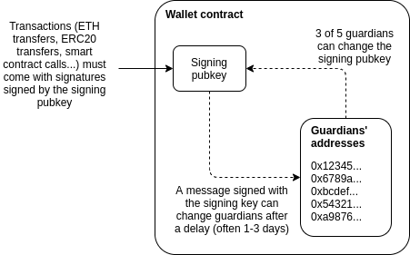
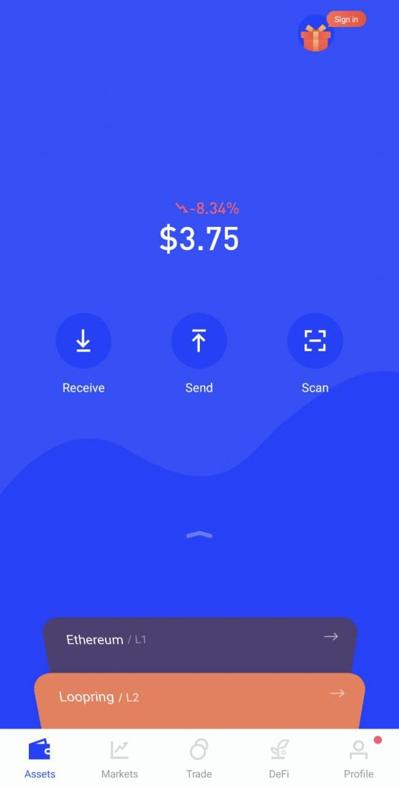
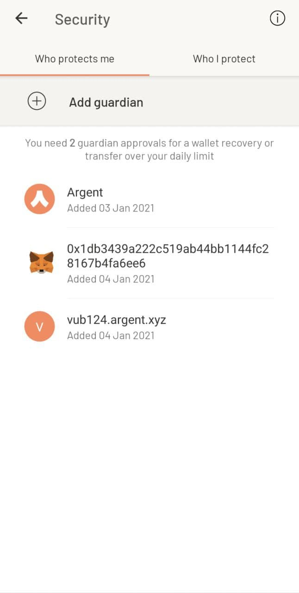

Why we need wide adoption of social recovery wallets
2021 Jan 11
See all posts
Why we need wide adoption of social recovery wallets
Special thanks to Itamar Lesuisse from Argent and Daniel Wang
from Loopring for feedback.
One of the great challenges with making cryptocurrency and blockchain
applications usable for average users is security: how do we prevent
users' funds from being lost or stolen? Losses and thefts are a serious
issue, often costing innocent blockchain users thousands of dollars or
even in some cases the majority of their entire net worth.
There have been many solutions proposed over the years: paper
wallets, hardware wallets, and my own one-time favorite: multisig
wallets. And indeed they have led to significant improvements in
security. However, these solutions have all suffered from various
defects - sometimes providing far less extra protection against theft
and loss than is actually needed, sometimes being cumbersome and
difficult to use leading to very low adoption, and sometimes both. But
recently, there is an emerging better alternative: a newer type of smart
contract wallet called a social recovery wallet. These wallets
can potentially provide a high level of security and much better
usability than previous options, but there is still a way to go before
they can be easily and widely deployed. This post will go
through what social recovery wallets are, why they matter, and how we
can and should move toward much broader adoption of them throughout the
ecosystem.
Wallet security is a
really big problem
Wallet security issues have been a thorn in the side of the
blockchain ecosystem almost since the beginning. Cryptocurrency losses
and thefts were rampant even back in 2011 when Bitcoin was almost the
only cryptocurrency out there; indeed, in my pre-Ethereum role as a
cofounder and writer of Bitcoin
Magazine, I wrote an entire article detailing the horrors of hacks
and losses and thefts that were already happening at the time.
Here is one sample:
Last night around 9PM PDT, I clicked a link to go to
CoinChat[.]freetzi[.]com – and I was prompted to run java. I did
(thinking this was a legitimate chatoom), and nothing happened. I closed
the window and thought nothing of it. I opened my bitcoin-qt wallet
approx 14 minutes later, and saw a transaction that I did NOT approve go
to wallet 1Es3QVvKN1qA2p6me7jLCVMZpQXVXWPNTC for almost my entire
wallet...
This person's losses were 2.07 BTC, worth $300 at the time, and over
$70000 today. Here's another one:
In June 2011, the Bitcointalk member "allinvain" lost 25,000 BTC
(worth $500,000 at the time) after an unknown intruder somehow gained
direct access to his computer. The attacker was able to access
allinvain's wallet.dat file, and quickly empty out the wallet – either
by sending a transaction from allinvain's computer itself, or by simply
uploading the wallet.dat file and emptying it on his own machine.
In present-day value, that's a loss of nearly one billion
dollars. But theft is not the only concern; there are also losses
from losing one's private keys. Here's Stefan Thomas:
Bitcoin developer Stefan Thomas had three backups of his wallet – an
encrypted USB stick, a Dropbox account and a Virtualbox virtual machine.
However, he managed to erase two of them and forget the password to the
third, forever losing access to 7,000 BTC (worth $125,000 at the time).
Thomas's reaction: "[I'm] pretty dedicated to creating better clients
since then."
One analysis of the Bitcoin ecosystem suggests that 1500
BTC may be lost every day - over ten times more than what Bitcoin
users spend
on transaction fees, and over the years adding up to as much as 20%
of the total supply. The stories and the numbers alike point to the
same inescapable truth: the importance of the wallet security
problem is great, and it should not be underestimated.
It's easy to see the social and psychological reasons why wallet
security is easy to underestimate: people naturally worry about
appearing uncareful or dumb in front of an always judgemental public,
and so many keep their experiences with their funds getting hacked to
themselves. Loss of funds is even worse, as there is a pervasive (though
in my opinion very incorrect) feeling that "there is no one to blame but
yourself". But the reality is that the whole point of
digital technology, blockchains included, is to make it easier for
humans to engage in very complicated tasks without having to exert
extreme mental effort or live in constant fear of making
mistakes. An ecosystem whose only answer to losses and thefts
is a combination of 12-step tutorials, not-very-secure half-measures and
the not-so-occasional semi-sarcastic "sorry for your loss" is going to
have a hard time getting broad adoption.
So solutions that reduce the quantity of losses and thefts taking
place, without requiring all cryptocurrency users to turn personal
security into a full-time hobby, are highly valuable for the
industry.
Hardware wallets
alone are not good enough
Hardware wallets are often touted as the best-in-class technology for
cryptocurrency funds management. A hardware wallet is a specialized
hardware device which can be connected to your computer or phone (eg.
through USB), and which contains a specialized chip that can only
generate private keys and sign transactions. A transaction would be
initiated on your computer or phone, must be confirmed on the hardware
wallet before it can be sent. The private key stays on your hardware
wallet, so an attacker that hacks into your computer or phone could
not drain the funds.
Hardware wallets are a significant improvement, and they certainly
would have protected the Java chatroom victim, but they are not perfect.
I see two main problems with hardware wallets:
- Supply chain attacks: if you buy a hardware wallet,
you are trusting a number of actors that were involved in producing it -
the company that designed the wallet, the factory that produced it, and
everyone involved in shipping it who could have replaced it with a fake.
Hardware wallets are potentially a magnet for such attacks: the ratio of
funds stolen to number of devices compromised is very high. To their
credit, hardware wallet manufacturers such as Ledger have put in many
safeguards to protect against these risks, but some risks still remain.
A hardware device fundamentally cannot be audited the same way a piece
of open source software can.
- Still a single point of failure: if someone steals
your hardware wallet right after they stand behind your shoulder and
catch you typing in the PIN, they can steal your funds. If you lose your
hardware wallet, then you lose your funds - unless the hardware wallet
generates and outputs a backup at setup time, but as we will see those
have problems of their own...
Mnemonic phrases are not
good enough
Many wallets, hardware and software alike, have a setup procedure
during which they output a mnemonic phrase, which is a
human-readable 12 to 24-word encoding of the wallet's root private key.
A mnemonic phrase looks like this:
vote dance type subject valley fall usage silk
essay lunch endorse lunar obvious race ribbon key
already arrow enable drama keen survey lesson cruel
If you lose your wallet but you have the mnemonic phrase, you can
input the phrase when setting up a new wallet to recover your account,
as the mnemonic phrase contains the root key from which all of your
other keys can be generated.
Mnemonic phrases are good for protecting against loss, but they do
nothing against theft. Even worse, they add a new vector for
theft: if you have the standard hardware wallet + mnemonic backup combo,
then someone stealing either your hardware wallet + PIN
or your mnemonic backup can steal your funds. Furthermore,
maintaining a mnemonic phrase and not accidentally throwing it away is
itself a non-trivial mental effort.
The problems with theft can be alleviated if you split the phrase in
half and give half to your friend, but (i) almost no one actually
promotes this, (ii) there are security issues, as if the phrase is short
(128 bits) then a sophisticated and motivated attacker who steals one
piece may be able to brute-force through all \(2^{64}\) possible combinations to find the
other, and (iii) it increases the mental overhead even further.
So what do we need?
What we need is a wallet design which satisfies three key
criteria:
- No single point of failure: there is no single
thing (and ideally, no collection of things which travel together)
which, if stolen, can give an attacker access to your funds, or if lost,
can deny you access to your funds.
- Low mental overhead: as much as possible, it should
not require users to learn strange new habits or exert mental effort to
always remember to follow certain patterns of behavior.
- Maximum ease of transacting: most normal activities
should not require much more effort than they do in regular wallets (eg.
Status, Metamask...)
Multisig is good!
The best-in-class technology for solving these problems back
in 2013 was multisig. You could have a wallet that has three keys,
where any two of them are needed to send a transaction.

This technology was originally developed within the Bitcoin
ecosystem, but excellent multisig wallets (eg. see Gnosis Safe) now exist for Ethereum
too. Multisig wallets have been highly successful within organizations:
the Ethereum Foundation uses a 4-of-7 multisig wallet to store its
funds, as do many other orgs in the Ethereum ecosystem.
For a multisig wallet to hold the funds for an individual,
the main challenge is: who holds the funds, and how are transactions
approved? The most common formula is some variant of "two easily
accessible, but separate, keys, held by you (eg. laptop and phone) and a
third more secure but less accessible a backup, held offline or by a
friend or institution".
This is reasonably secure: there is no single device that can be lost
or stolen that would lead to you losing access to your funds. But the
security is far from perfect: if you can steal someone's laptop, it's
often not that hard to steal their phone as well. The usability is also
a challenge, as every transaction now requires two confirmations with
two devices.
Social recovery is better
This gets us to my preferred method for securing a wallet: social
recovery. A social recovery system works as follows:
- There is a single "signing key" that can be used to approve
transactions
- There is a set of at least 3 (or a much higher number) of
"guardians", of which a majority can cooperate to change the signing key
of the account.
The signing key has the ability to add or remove guardians, though
only after a delay (often 1-3 days).

Under all normal circumstances, the user can simply use their social
recovery wallet like a regular wallet, signing messages with their
signing key so that each transaction signed can fly off with a single
confirmation click much like it would in a "traditional" wallet like
Metamask.
If a user loses their signing key, that is when the social
recovery functionality would kick in. The user can simply reach out to
their guardians and ask them to sign a special transaction to change the
signing pubkey registered in the wallet contract to a new one. This is
easy: they can simply go to a webpage such as security.loopring.io, sign in,
see a recovery request and sign it. About as easy for each guardian as
making a Uniswap trade.
There are many possible choices for whom to select as a guardian. The
three most common choices are:
- Other devices (or paper mnemonics) owned by the wallet holder
themselves
- Friends and family members
- Institutions, which would sign a recovery message if they get a
confirmation of your phone number or email or perhaps in high value
cases verify you personally by video call
Guardians are easy to add: you can add a guardian simply by typing in
their ENS name or ETH address, though most social recovery wallets will
require the guardian to sign a transaction in the recovery webpage to
agree to be added. In any sanely designed social recovery wallet, the
guardian does NOT need to download and use the same wallet; they can
simply use their existing Ethereum wallet, whichever type of wallet it
is. Given the high convenience of adding guardians, if you are lucky
enough that your social circles are already made up of Ethereum users, I
personally favor high guardian counts (ideally 7+) for increased
security. If you already have a wallet, there is no ongoing mental
effort required to be a guardian: any recovery operations that you do
would be done through your existing wallet. If you not know many other
active Ethereum users, then a smaller number of guardians that you trust
to be technically competent is best.
To reduce the risk of attacks on guardians and collusion,
your guardians do not have to be publicly known: in fact, they
do not need to know each other's identities. This can
be accomplished in two ways. First, instead of the guardians' addresses
being stored directly on chain, a hash of the list of addresses can be
stored on chain, and the wallet owner would only need to publish the
full list at recovery time. Second, each guardian can be asked to
deterministically generate a new single-purpose address that they would
use just for that particular recovery; they would not need to actually
send any transactions with that address unless a recovery is actually
required. To complement these technical protections, it's
recommended to choose a diverse collection of guardians from different
social circles (including ideally one institutional guardian);
these recommendations together would make it extremely difficult for the
guardians to be attacked simultaneously or collude.
In the event that you die or are permanently incapacitated, it would
be a socially agreed standard protocol that guardians can publicly
announce themselves, so in that case they can find each other and
recover your funds.
Social
recovery wallets are not a betrayal, but rather an expression,
of "crypto values"
One common response to suggestions to use any form of multisig,
social recovery or otherwise, is the idea that this solution goes back
to "trusting people", and so is a betrayal of the values of the
blockchain and cryptocurrency industry. While I understand why one may
think this at first glance, I would argue that this criticism stems from
a fundamental misunderstanding of what crypto should be about.
To me, the goal of crypto was never to remove the need for
all trust. Rather, the goal of crypto is to give people
access to cryptographic and economic building blocks that give people
more choice in whom to trust, and furthermore allow people to
build more constrained forms of trust: giving someone
the power to do some things on your behalf without giving them the power
to do everything. Viewed in this way, multisig and social
recovery are a perfect expression of this principle: each
participant has some influence over the ability to accept or
reject transactions, but no one can move funds unilaterally. This more
complex logic allows for a setup far more secure than what would be
possible if there had to be one person or key that unilaterally
controlled the funds.
This fundamental idea, that human inputs should be wielded carefully
but not thrown away outright, is powerful because it works well with the
strengths and weaknesses of the human brain. The human brain is quite
poorly suited for remembering passwords and tracking paper wallets, but
it's an ASIC for keeping track of relationships with other people. This
effect is even stronger for less technical users: they may have a harder
time with wallets and passwords, but they are just as adept at social
tasks like "choose 7 people who won't all gang up on me". If we
can extract at least some information from human inputs into a
mechanism, without those inputs turning into a vector for attack and
exploitation, then we should figure out how. And social recovery is very
robust: for a wallet with 7 guardians to be compromised, 4 of the 7
guardians would need to somehow discover each other and agree to steal
the funds, without any of them tipping the owner off: certainly
a much tougher challenge than attacking a wallet
protected purely by a single individuals.
How can social
recovery protect against theft?
Social recovery as explained above deals with the risk that you
lose your wallet. But there is still the risk that your signing
key gets stolen: someone hacks into your computer, sneaks up
behind you while you're already logged in and hits you over the head, or
even just uses some user interface glitch to trick you into signing a
transaction that you did not intend to sign.
We can extend social recovery to deal with such issues by adding a vault.
Every social recovery wallet can come with an automatically generated
vault. Assets can be moved to the vault just by sending them to the
vault's address, but they can be moved out of the vault only with a 1
week delay. During that delay, the signing key (or, by extension, the
guardians) can cancel the transaction. If desired, the vault could also
be programmed so that some limited financial operations (eg. Uniswap
trades between some whitelisted tokens) can be done without delay.
Existing social recovery
wallets
Currently, the two major wallets that have implemented social
recovery are the Argent wallet and
the Loopring wallet:


The Argent wallet is the first major, and still the most popular,
"smart contract wallet" currently in use, and social recovery is one of
its main selling points. The Argent wallet includes an interface by
which guardians can be added and removed:

To protect against theft, the wallet has a daily limit: transactions
up to that amount are instant but transactions above that amount require
guardians to approve to finalize the withdrawal.
The Loopring wallet is most known for being built by the developers
of (and of course including support for) the Loopring protocol, a ZK rollup for payments and
decentralized exchange. But the Loopring wallet also has a social
recovery feature, which works very similarly to that in Argent. In both
cases, the wallet companies provide one guardian for free, which relies
on a confirmation code sent by mobile phone to authenticate you. For the
other guardians, you can add either other users of the same wallet, or
any Ethereum user by providing their Ethereum address.
The user experience in both cases is surprisingly smooth. There were
two main challenges. First, the smoothness in both cases relies on a
central "relayer" run by the wallet maker that re-publishes signed
messages as transactions. Second, the fees are high. Fortunately, both
of these problems are surmountable.
Migration
to Layer 2 (rollups) can solve the remaining challenges
As mentioned above, there are two key challenges: (i) the
dependence on relayers to solve transactions, and (ii) high transaction
fees. The first challenge, dependence on relayers, is an
increasingly common problem in Ethereum applications. The issue arises
because there are two types of accounts in Ethereum: externally
owned accounts (EOAs), which are accounts controlled by a
single private key, and contracts. In Ethereum, there
is a rule that every transaction must start from an EOA; the original
intention was that EOAs represent "users" and contracts represent
"applications", and an application can only run if a user talks to the
application. If we want wallets with more complex policies, like
multisig and social recovery, we need to use contracts to represent
users. But this poses a challenge: if your funds are in a contract, you
need to have some other account that has ETH that can pay to
start each transaction, and it needs quite a lot of ETH just in case
transaction fees get really high.
Argent and Loopring get around this problem by personally running a
"relayer". The relayer listens for off-chain digitally signed "messages"
submitted by users, and wraps these messages in a transaction and
publishes them to chain. But for the long run, this is a poor solution;
it adds an extra point of centralization. If the relayer is down and a
user really needs to send a transaction, they can always just send it
from their own EOA, but it is nevertheless the case that a new tradeoff
between centralization and inconvenience is introduced. There are
efforts to solve this problem and get convenience without
centralization; the main two categories revolve around either making a
generalized decentralized relayer
network or modifying the Ethereum protocol itself to allow
transactions to begin from contracts. But neither of these solutions
solve transaction fees, and in fact, they make the problem worse due to
smart contracts' inherently greater complexity.
Fortunately, we can solve both of these problems at
the same time, by looking toward a third solution: moving the ecosystem
onto layer 2 protocols
such as optimistic rollups and ZK rollups. Optimistic and ZK
rollups can both be designed with account abstraction built in,
circumventing any need for relayers. Existing wallet developers are
already looking into rollups, but ultimately migrating to rollups en
masse is an ecosystem-wide challenge.
An ecosystem-wide mass migration to rollups is as good an opportunity
as any to reverse the Ethereum ecosystem's earlier mistakes and give
multisig and smart contract wallets a much more central role in helping
to secure users' funds. But this requires broader recognition that
wallet security is a challenge, and that we have not gone nearly as far
in trying to meet and challenge as we should. Multisig and social
recovery need not be the end of the story; there may well be designs
that work even better. But the simple reform of moving to rollups and
making sure that these rollups treat smart contract wallets as first
class citizens is an important step toward making that happen.
Why we need wide adoption of social recovery wallets
2021 Jan 11 See all postsSpecial thanks to Itamar Lesuisse from Argent and Daniel Wang from Loopring for feedback.
One of the great challenges with making cryptocurrency and blockchain applications usable for average users is security: how do we prevent users' funds from being lost or stolen? Losses and thefts are a serious issue, often costing innocent blockchain users thousands of dollars or even in some cases the majority of their entire net worth.
There have been many solutions proposed over the years: paper wallets, hardware wallets, and my own one-time favorite: multisig wallets. And indeed they have led to significant improvements in security. However, these solutions have all suffered from various defects - sometimes providing far less extra protection against theft and loss than is actually needed, sometimes being cumbersome and difficult to use leading to very low adoption, and sometimes both. But recently, there is an emerging better alternative: a newer type of smart contract wallet called a social recovery wallet. These wallets can potentially provide a high level of security and much better usability than previous options, but there is still a way to go before they can be easily and widely deployed. This post will go through what social recovery wallets are, why they matter, and how we can and should move toward much broader adoption of them throughout the ecosystem.
Wallet security is a really big problem
Wallet security issues have been a thorn in the side of the blockchain ecosystem almost since the beginning. Cryptocurrency losses and thefts were rampant even back in 2011 when Bitcoin was almost the only cryptocurrency out there; indeed, in my pre-Ethereum role as a cofounder and writer of Bitcoin Magazine, I wrote an entire article detailing the horrors of hacks and losses and thefts that were already happening at the time.
Here is one sample:
This person's losses were 2.07 BTC, worth $300 at the time, and over $70000 today. Here's another one:
In present-day value, that's a loss of nearly one billion dollars. But theft is not the only concern; there are also losses from losing one's private keys. Here's Stefan Thomas:
One analysis of the Bitcoin ecosystem suggests that 1500 BTC may be lost every day - over ten times more than what Bitcoin users spend on transaction fees, and over the years adding up to as much as 20% of the total supply. The stories and the numbers alike point to the same inescapable truth: the importance of the wallet security problem is great, and it should not be underestimated.
It's easy to see the social and psychological reasons why wallet security is easy to underestimate: people naturally worry about appearing uncareful or dumb in front of an always judgemental public, and so many keep their experiences with their funds getting hacked to themselves. Loss of funds is even worse, as there is a pervasive (though in my opinion very incorrect) feeling that "there is no one to blame but yourself". But the reality is that the whole point of digital technology, blockchains included, is to make it easier for humans to engage in very complicated tasks without having to exert extreme mental effort or live in constant fear of making mistakes. An ecosystem whose only answer to losses and thefts is a combination of 12-step tutorials, not-very-secure half-measures and the not-so-occasional semi-sarcastic "sorry for your loss" is going to have a hard time getting broad adoption.
So solutions that reduce the quantity of losses and thefts taking place, without requiring all cryptocurrency users to turn personal security into a full-time hobby, are highly valuable for the industry.
Hardware wallets alone are not good enough
Hardware wallets are often touted as the best-in-class technology for cryptocurrency funds management. A hardware wallet is a specialized hardware device which can be connected to your computer or phone (eg. through USB), and which contains a specialized chip that can only generate private keys and sign transactions. A transaction would be initiated on your computer or phone, must be confirmed on the hardware wallet before it can be sent. The private key stays on your hardware wallet, so an attacker that hacks into your computer or phone could not drain the funds.
Hardware wallets are a significant improvement, and they certainly would have protected the Java chatroom victim, but they are not perfect. I see two main problems with hardware wallets:
Mnemonic phrases are not good enough
Many wallets, hardware and software alike, have a setup procedure during which they output a mnemonic phrase, which is a human-readable 12 to 24-word encoding of the wallet's root private key. A mnemonic phrase looks like this:
If you lose your wallet but you have the mnemonic phrase, you can input the phrase when setting up a new wallet to recover your account, as the mnemonic phrase contains the root key from which all of your other keys can be generated.
Mnemonic phrases are good for protecting against loss, but they do nothing against theft. Even worse, they add a new vector for theft: if you have the standard hardware wallet + mnemonic backup combo, then someone stealing either your hardware wallet + PIN or your mnemonic backup can steal your funds. Furthermore, maintaining a mnemonic phrase and not accidentally throwing it away is itself a non-trivial mental effort.
The problems with theft can be alleviated if you split the phrase in half and give half to your friend, but (i) almost no one actually promotes this, (ii) there are security issues, as if the phrase is short (128 bits) then a sophisticated and motivated attacker who steals one piece may be able to brute-force through all \(2^{64}\) possible combinations to find the other, and (iii) it increases the mental overhead even further.
So what do we need?
What we need is a wallet design which satisfies three key criteria:
Multisig is good!
The best-in-class technology for solving these problems back in 2013 was multisig. You could have a wallet that has three keys, where any two of them are needed to send a transaction.
This technology was originally developed within the Bitcoin ecosystem, but excellent multisig wallets (eg. see Gnosis Safe) now exist for Ethereum too. Multisig wallets have been highly successful within organizations: the Ethereum Foundation uses a 4-of-7 multisig wallet to store its funds, as do many other orgs in the Ethereum ecosystem.
For a multisig wallet to hold the funds for an individual, the main challenge is: who holds the funds, and how are transactions approved? The most common formula is some variant of "two easily accessible, but separate, keys, held by you (eg. laptop and phone) and a third more secure but less accessible a backup, held offline or by a friend or institution".
This is reasonably secure: there is no single device that can be lost or stolen that would lead to you losing access to your funds. But the security is far from perfect: if you can steal someone's laptop, it's often not that hard to steal their phone as well. The usability is also a challenge, as every transaction now requires two confirmations with two devices.
Social recovery is better
This gets us to my preferred method for securing a wallet: social recovery. A social recovery system works as follows:
The signing key has the ability to add or remove guardians, though only after a delay (often 1-3 days).
Under all normal circumstances, the user can simply use their social recovery wallet like a regular wallet, signing messages with their signing key so that each transaction signed can fly off with a single confirmation click much like it would in a "traditional" wallet like Metamask.
If a user loses their signing key, that is when the social recovery functionality would kick in. The user can simply reach out to their guardians and ask them to sign a special transaction to change the signing pubkey registered in the wallet contract to a new one. This is easy: they can simply go to a webpage such as security.loopring.io, sign in, see a recovery request and sign it. About as easy for each guardian as making a Uniswap trade.
There are many possible choices for whom to select as a guardian. The three most common choices are:
Guardians are easy to add: you can add a guardian simply by typing in their ENS name or ETH address, though most social recovery wallets will require the guardian to sign a transaction in the recovery webpage to agree to be added. In any sanely designed social recovery wallet, the guardian does NOT need to download and use the same wallet; they can simply use their existing Ethereum wallet, whichever type of wallet it is. Given the high convenience of adding guardians, if you are lucky enough that your social circles are already made up of Ethereum users, I personally favor high guardian counts (ideally 7+) for increased security. If you already have a wallet, there is no ongoing mental effort required to be a guardian: any recovery operations that you do would be done through your existing wallet. If you not know many other active Ethereum users, then a smaller number of guardians that you trust to be technically competent is best.
To reduce the risk of attacks on guardians and collusion, your guardians do not have to be publicly known: in fact, they do not need to know each other's identities. This can be accomplished in two ways. First, instead of the guardians' addresses being stored directly on chain, a hash of the list of addresses can be stored on chain, and the wallet owner would only need to publish the full list at recovery time. Second, each guardian can be asked to deterministically generate a new single-purpose address that they would use just for that particular recovery; they would not need to actually send any transactions with that address unless a recovery is actually required. To complement these technical protections, it's recommended to choose a diverse collection of guardians from different social circles (including ideally one institutional guardian); these recommendations together would make it extremely difficult for the guardians to be attacked simultaneously or collude.
In the event that you die or are permanently incapacitated, it would be a socially agreed standard protocol that guardians can publicly announce themselves, so in that case they can find each other and recover your funds.
Social recovery wallets are not a betrayal, but rather an expression, of "crypto values"
One common response to suggestions to use any form of multisig, social recovery or otherwise, is the idea that this solution goes back to "trusting people", and so is a betrayal of the values of the blockchain and cryptocurrency industry. While I understand why one may think this at first glance, I would argue that this criticism stems from a fundamental misunderstanding of what crypto should be about.
To me, the goal of crypto was never to remove the need for all trust. Rather, the goal of crypto is to give people access to cryptographic and economic building blocks that give people more choice in whom to trust, and furthermore allow people to build more constrained forms of trust: giving someone the power to do some things on your behalf without giving them the power to do everything. Viewed in this way, multisig and social recovery are a perfect expression of this principle: each participant has some influence over the ability to accept or reject transactions, but no one can move funds unilaterally. This more complex logic allows for a setup far more secure than what would be possible if there had to be one person or key that unilaterally controlled the funds.
This fundamental idea, that human inputs should be wielded carefully but not thrown away outright, is powerful because it works well with the strengths and weaknesses of the human brain. The human brain is quite poorly suited for remembering passwords and tracking paper wallets, but it's an ASIC for keeping track of relationships with other people. This effect is even stronger for less technical users: they may have a harder time with wallets and passwords, but they are just as adept at social tasks like "choose 7 people who won't all gang up on me". If we can extract at least some information from human inputs into a mechanism, without those inputs turning into a vector for attack and exploitation, then we should figure out how. And social recovery is very robust: for a wallet with 7 guardians to be compromised, 4 of the 7 guardians would need to somehow discover each other and agree to steal the funds, without any of them tipping the owner off: certainly a much tougher challenge than attacking a wallet protected purely by a single individuals.
How can social recovery protect against theft?
Social recovery as explained above deals with the risk that you lose your wallet. But there is still the risk that your signing key gets stolen: someone hacks into your computer, sneaks up behind you while you're already logged in and hits you over the head, or even just uses some user interface glitch to trick you into signing a transaction that you did not intend to sign.
We can extend social recovery to deal with such issues by adding a vault. Every social recovery wallet can come with an automatically generated vault. Assets can be moved to the vault just by sending them to the vault's address, but they can be moved out of the vault only with a 1 week delay. During that delay, the signing key (or, by extension, the guardians) can cancel the transaction. If desired, the vault could also be programmed so that some limited financial operations (eg. Uniswap trades between some whitelisted tokens) can be done without delay.
Existing social recovery wallets
Currently, the two major wallets that have implemented social recovery are the Argent wallet and the Loopring wallet:
The Argent wallet is the first major, and still the most popular, "smart contract wallet" currently in use, and social recovery is one of its main selling points. The Argent wallet includes an interface by which guardians can be added and removed:
To protect against theft, the wallet has a daily limit: transactions up to that amount are instant but transactions above that amount require guardians to approve to finalize the withdrawal.
The Loopring wallet is most known for being built by the developers of (and of course including support for) the Loopring protocol, a ZK rollup for payments and decentralized exchange. But the Loopring wallet also has a social recovery feature, which works very similarly to that in Argent. In both cases, the wallet companies provide one guardian for free, which relies on a confirmation code sent by mobile phone to authenticate you. For the other guardians, you can add either other users of the same wallet, or any Ethereum user by providing their Ethereum address.
The user experience in both cases is surprisingly smooth. There were two main challenges. First, the smoothness in both cases relies on a central "relayer" run by the wallet maker that re-publishes signed messages as transactions. Second, the fees are high. Fortunately, both of these problems are surmountable.
Migration to Layer 2 (rollups) can solve the remaining challenges
As mentioned above, there are two key challenges: (i) the dependence on relayers to solve transactions, and (ii) high transaction fees. The first challenge, dependence on relayers, is an increasingly common problem in Ethereum applications. The issue arises because there are two types of accounts in Ethereum: externally owned accounts (EOAs), which are accounts controlled by a single private key, and contracts. In Ethereum, there is a rule that every transaction must start from an EOA; the original intention was that EOAs represent "users" and contracts represent "applications", and an application can only run if a user talks to the application. If we want wallets with more complex policies, like multisig and social recovery, we need to use contracts to represent users. But this poses a challenge: if your funds are in a contract, you need to have some other account that has ETH that can pay to start each transaction, and it needs quite a lot of ETH just in case transaction fees get really high.
Argent and Loopring get around this problem by personally running a "relayer". The relayer listens for off-chain digitally signed "messages" submitted by users, and wraps these messages in a transaction and publishes them to chain. But for the long run, this is a poor solution; it adds an extra point of centralization. If the relayer is down and a user really needs to send a transaction, they can always just send it from their own EOA, but it is nevertheless the case that a new tradeoff between centralization and inconvenience is introduced. There are efforts to solve this problem and get convenience without centralization; the main two categories revolve around either making a generalized decentralized relayer network or modifying the Ethereum protocol itself to allow transactions to begin from contracts. But neither of these solutions solve transaction fees, and in fact, they make the problem worse due to smart contracts' inherently greater complexity.
Fortunately, we can solve both of these problems at the same time, by looking toward a third solution: moving the ecosystem onto layer 2 protocols such as optimistic rollups and ZK rollups. Optimistic and ZK rollups can both be designed with account abstraction built in, circumventing any need for relayers. Existing wallet developers are already looking into rollups, but ultimately migrating to rollups en masse is an ecosystem-wide challenge.
An ecosystem-wide mass migration to rollups is as good an opportunity as any to reverse the Ethereum ecosystem's earlier mistakes and give multisig and smart contract wallets a much more central role in helping to secure users' funds. But this requires broader recognition that wallet security is a challenge, and that we have not gone nearly as far in trying to meet and challenge as we should. Multisig and social recovery need not be the end of the story; there may well be designs that work even better. But the simple reform of moving to rollups and making sure that these rollups treat smart contract wallets as first class citizens is an important step toward making that happen.